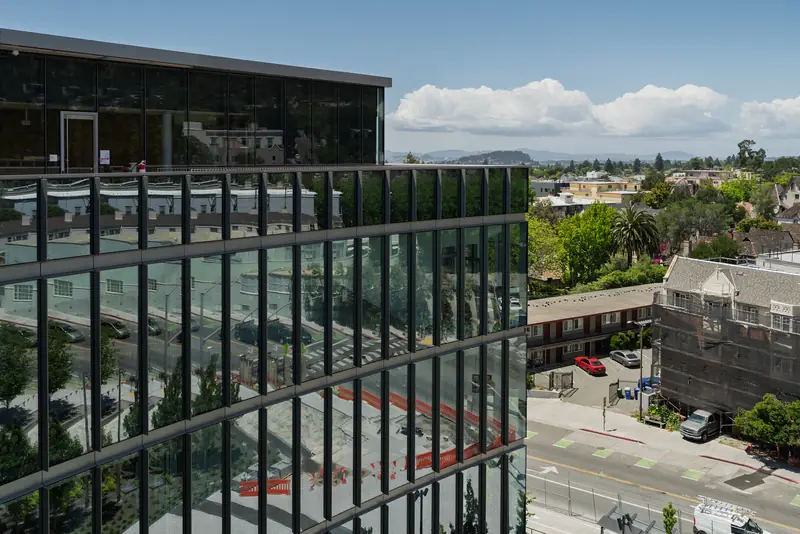
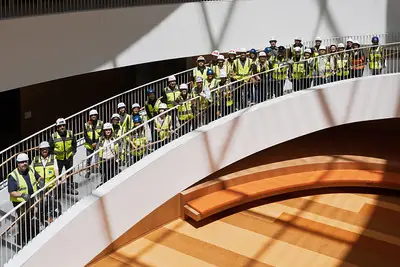
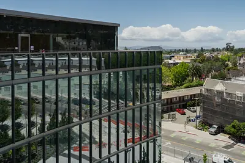
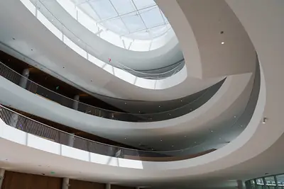
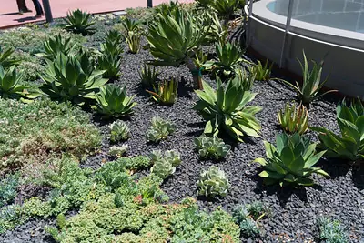

Gateway Sustainability Systems
Gateway is the first building in the world pursuing TRUE Zero Waste certification for both construction and operations.
The Barbara and Gerson Bakar Gateway is home to UC Berkeley's College of Computing, Data Science, and Society, the first new college at UC Berkeley in more than 50 years. Its construction earned TRUE Platinum, the highest level. Today about 1,300 people work and study here, and every system below is designed to make the sustainable choice the easy one.
Gateway at a Glance
- TRUE Platinum Construction, awarded August 2026
- 99.01% Construction waste diverted from landfill
- 66,751 tons Kept out of landfill during construction
- ~$1.8M Saved through source separation
Explore Gateway
Start with how Gateway was built, then follow the four systems that keep it running on zero waste: track what comes in, reuse first, buy smart, and recover the rest.
-

ConstructionHow We Built It
How Gateway earned TRUE Platinum before it opened.
Explore Construction -

-

-

Why it matters beyond Gateway
Gateway's systems put University of California and UC Berkeley goals into practice, one building at a time.
University of California
The UC Sustainable Practices Policy asks every campus to:
- Divert 90% of municipal solid waste from landfill.
- Cut waste per person to 25% below 2015–16 levels by 2025, and 50% below by 2030.
Source: UC Office of the President, Waste Reduction and Recycling
UC Berkeley
In 2020, UC Berkeley committed to eliminating all non-essential single-use plastic with viable alternatives by 2030. The campus calls it the most comprehensive ban of plastic by an institution and "the country's strongest ban on single-use plastic."
Over a quarter of UC Berkeley's waste is non-recyclable plastic.
Diverting waste isn't enough. UC also asks us to make less of it in the first place.
Meet the Team
Who we are
We're the Cal Zero Waste Gateway team, part of UC Berkeley Facilities Services. Our project began with a grant from The Green Initiative Fund (TGIF), which funds student positions to see Gateway all the way through TRUE certification, starting with precertification in 2023. We led the construction phase to TRUE Platinum. Now we're focused on operations: making zero waste the easy default for everyone who works and studies in Gateway.
-
SB
Sam Bunke, PhD
Zero Waste Specialist
Leads UC Berkeley Zero Waste's sustainable campus operations and programs.
-
AP
Audrey Pollack
Project Coordinator
A third-year UC Berkeley student majoring in Molecular Environmental Biology with a chemistry minor.
"My chemical engineering research on materials and breaking down plastic polymers brings me full circle with our sustainable implementation work here at Gateway."
-
TE
Tiana Elgidi
Data and Analytics Staff Associate
-
MB
Maia Berges Voorhis
Education and Outreach Staff Associate
-
LC
Luisa Cervantes Nualart
Research and Documentation Staff Associate
Project Resources
Gateway's core guidance and a library of quick, task-based guides.
Zero Waste Operations Manual
Every policy, system, and sorting rule for Gateway in one place.
Open the Manual (Google Slides)Resource Library
The Sorting Guide, kitchen, catering, event, and café guides, and the Approved Products Catalog.
Browse the Resource Library